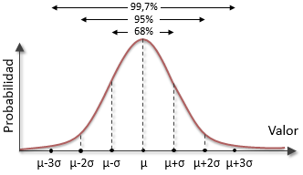

Universidad distrital Francisco José de Caldas Curso de Probabilidad 425-81
Profesor: Fernando León
Periodo: 2020-3
Distribución Normal
Basado en ...INSERTAR FUENTELa distribución normal (en ocasiones llamada distribución gaussiana) es la distribución continua que se utiliza más comúnmente en estadística, es un modelo que aproxima el valor de una variable aleatoria a una situación ideal, dependiendo de media y la desviación típica
En la distribución normal, se puede calcular la probabilidad de que varios valores ocurran dentro de ciertos rangos o intervalos. Sin embargo, la probabilidad exacta de un valor particular dentro de una distribución continua, como la distribución normal, es cero. Esta propiedad distingue a las variables continuas, que son medidas, de las variables discretas, las cuales son contadas.
La distribución normal tiene importantes propiedades teóricas:
- Tiene una apariencia de forma de campana (y, por ende, es simétrica).
- Su variable aleatoria asociada tiene un rango infinito \(( -\infty < x < \infty)\).
- Está definida por la funcion f(x):
\(\frac{1}{\sigma \sqrt{2\pi}} e^{- \frac{1}{2\sigma^{2}} (x - \mu)^2} \)
Donde \(\mu\) es la media y \(\sigma\) es la desviación estandar.
A tener en cuenta...
Teniendo en cuenta que la distribución de probabilidad en la distribución normal, se encuentra a travez de un area bajo la curva de la función anteriormente mencionada, el teorema brinda una tabla de valores para cada cada unidad estandar y asi poder hallar de manera mas facil el area bajo la curva y asi una distribución de probabilidad.

Ejemplo explicativo
Adaptado de ...INSERTAR FUENTE
Si las temperaturas de la ciudad de Bogotá alcanzan en promedio temperaturas de \(
19.3^{\circ} C\) en el mes de Octubre y además se presentan con una distribución normal,
donde si desviación estandar es \( 4^{\circ} C\).
Calcule la probabilidad de que el
primer día de noviembre se tenga una temperatura menor o igual a \( 4^{\circ} C\)
Solución...
Para el desarrollo de la solucion se debe tener en cuenta que en el enunciado enuncian a \(\mu \) (la media) = 19.3 y \(\sigma \) (la desviación estandar) = 4.
Sin embargo, para hacer uso de la tabla es necesario encontrar el valor de la unidad estandar de la probabilidad la cual se denota con \(Z\) y se calcula así \(Z = \frac{x - \mu }{\sigma}\)
Dejando eso claro se obtiene que la unidad estandar para los valores buscados es \(Z = \frac{22 - 19.3}{4} = 0.67\) (Para efectos de mejor navegación en la tabla se debe aproximar el valor de \(Z\) a dos decimales )
Se debe tener en cuenta que para navegar en la tabla se debe ver la parte decimal del valor de \(Z\) en donde sus décimas son las filas y sus centésimas son las columnas; para el caso del ejemplo es la fila de \(0.6\) y la columna de \(0.07\), de esta manera el valor para el area bajo la curva y la probabilidad preguntada es de \(0.7486\)
Calculadora de distribucion normal
A continuación puede calcular una probabilidad de un \(x ,\) para un \(\mu\) y un \(\sigma\) especificos.
\(P(X = x)\)
\(P(X \geq x)\)
\(P(X \leq x)\)